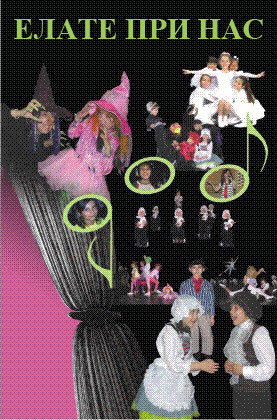

Child and Youth Stage School Theater "FUTE"
Established in 1987, and developed to be a winner of domestic and international art festivals.
First Prize at the District Review at the VII Republican Festival of Amateur Artistic Creativity for the performance "The Wolf and the Seven Goats" by Nedyalko Yordanov.
First place for directing and five individual awards at the Regional Holidays in the town of Novi Pazar for the performance "Little Muck" by Wilhelm Hauff.
Golden Prize at the Delta Po Festival in the town of Comacchio, Italy for the performances "The Three Little Pigs" after a Russian folk tale and "Thumbelina" after H. Kr. Andersen.
